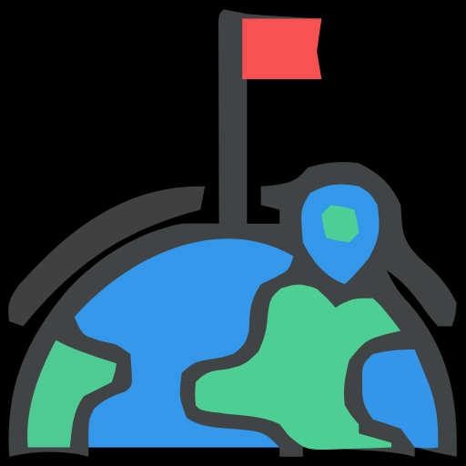
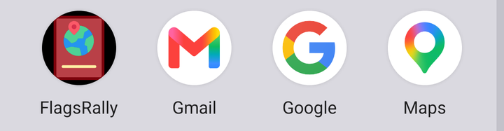
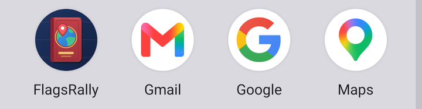
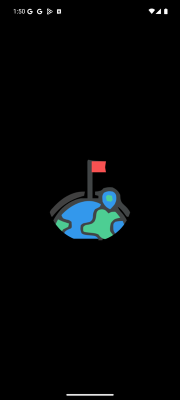
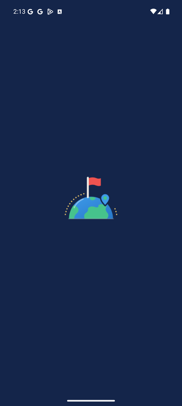

FlagsRallyのいちばんの魅力は、訪れた場所が「ARRIVAL」のスタンプや御朱印風の画像として集まっていくことです。いまはその魅力がテンプレートの紫と標準コントロールに埋もれています。この提案では、見た目をパスポートという1つの世界観にそろえ、機能の置き場所を「集める・記録する・眺める」の流れで整理し直します。
エミュレーター（Pixel 7 / API 36）で全画面を確認し、XAMLとViewModelを読んだうえでの所見です。「見た目」と「使い勝手」の問題は、多くが同じ原因から来ています。
| 観察したこと | なぜ問題か | 提案での対応 | 重要度 |
|---|---|---|---|
ステータスバー・ボタン・タブがすべてMAUIテンプレートの紫 #512BD4 | どのサンプルアプリとも同じ色で、アプリ固有の印象が残りません。 | パスポートの紺と入国スタンプの赤を軸にした配色トークンに置き換えます。 | 高 |
| 画面ごとに見た目の言語が違う（スタンプ風、クリーム色のタイル、標準フォーム、地図） | 同じアプリの画面に見えず、つぎはぎの印象になります。 | 紙・インク・スタンプという素材で全画面を統一します。 | 高 |
色の直書き（AntiqueWhite / Red / DodgerBlue / #1E50A2 など） | ダークモードで背景と文字がかみ合わず、色の変更も一括でできません。 | 色はすべて Colors.xaml のトークン経由にし、ページからは名前で参照します。 | 高 |
| 「ボード」タブの中に「国旗ボード」と「カスタムボード」が上タブで同居し、カスタムボードはボードが0件だと消える | 何がどこにあるのか予測できません。タブが出たり消えたりするのも混乱の元です。 | 「コレクション」タブにまとめ、国・地域・カスタムボードを同じカードの並びで見せます。 | 高 |
| ボードのインポートが、地図画面のフィルター横にある「＋」の文字 | 機能の存在に気付けません。インポートは地図ではなくコレクションの操作です。 | コレクション画面の「ボードを追加」カードに移します。 | 高 |
| 削除・リセットは情報ウィンドウの長押し、地点指定は地図の長押し | 見えない操作なので、説明を読まないと使えません。誤操作も起きやすくなります。 | ピンを選ぶと下からシートが出て、「チェックイン」「経路」「削除」をボタンで並べます。 | 中 |
| 画面上部の説明文（「現在地を確認して下のボタンを押してください」） | UIが自分で説明できていないサインです。画面の一等地を文章が占めています。 | 主ボタンのラベルと状態で伝え、説明文はなくします。 | 中 |
| フォントが4種類（Open Sans、Jerseyclub Grunge、craftmincho、Kiwi Maru）で役割が決まっていない | 文字の強弱に一貫性がなく、日本語は端末任せのフォールバックになります。 | UI用・タイル見出し用・スタンプ用の3役に整理します。 | 中 |
| 設定画面：右寄せの大きな紫ボタン、赤字の注意書き | すべてが同じ強さで主張し、どれが重要かわかりません。 | リスト形式の設定行にし、危険な操作だけ色を変えます。 | 中 |
| Android標準の下線付きPicker（国の選択、ボードの選択） | 未完成の画面に見えます。タップできることも伝わりにくいです。 | 枠付きのセレクターかチップに置き換えます（今回のピンフィルターと同じ形）。 | 中 |
アプリ名どおり、旅先で旗やスタンプを集めるラリーです。そこで、手元のパスポートを模した世界観に統一します。画面の地は紙、構造は表紙の紺、達成の瞬間はスタンプの赤、という役割分担です。赤は「記録する」「チェックインする」ときだけに使い、画面のどこに目を向ければよいかを色で伝えます。
スタンプは今のJerseyclub Grunge（欧文）とcraftmincho（和文）をそのまま使います。上の見本は代替フォントです。Open Sansは日本語を持たないのでUIからは外します。
いまのタブは画面の種類で分かれていて、カスタムボードのように同じ目的の機能が2か所に散っています。利用者の目的、つまり「記録を眺める」「現地で記録する」「集めているものを見る」で分け直します。
ボード名と神社名はエミュレーター上の実データから取っています。件数・日付・統計の数字は配置を示すための例です。
アイコンの「赤いパスポート・地球・ピン・金の帯」と、スプラッシュの「旗を立てた地球・ピン・弧」は変えません。構図も色の組み合わせもそのままです。変えるのは描き方です。ビットマップをトレースした線を図形で描き直し、背景・色・光の当たり方を2つのあいだでそろえます。

| 項目 | 現在 | 提案 |
|---|---|---|
| 線と形 | ビットマップをトレースしたSVGで、輪郭が波打つ。小さいと潰れる | 円・角丸の四角・曲線の図形で描き直す。線幅と角丸の大きさを統一 |
| 背景 | 黒。アイコンは黒い四角が残り、円形に切り抜かれると角が欠ける | 深い紺のグラデーションにかすかな緯線。アイコンとスプラッシュで同じ色 |
| 輪郭線 | スプラッシュは太いグレーの縁取りで、紺や黒の上では重く見える | 縁取りをやめ、面の色とハイライトで形を見せる |
| 色 | 赤・青・緑が原色に近く、2つの画像で少しずつ違う | 同じ色相のまま彩度をそろえる。赤 #C2414A、海 #3E9BEA→#2878C9、陸 #46C38C、金 #E9C46A |
| 奥行き | パスポートが平面で、紙の板のように見える | 背表紙、型押しの枠、上辺の光、落ち影を付けて「手帳」に見せる |
| 要素の重なり | ピンが地球に埋もれる | ピンを表紙の色で縁取り、地球から浮かせる |
| 弧 | 太いグレーの線 | 金の点線（旅のルート）。旗とピンの位置で途切れる |
| 切り抜きへの対応 | 考慮なし | アイコンは中心から半径33、スプラッシュは半径36の円に収め、どの形に切り抜かれても欠けない |
通知や設定画面の24pxでも、赤い手帳と地球の形は判別できます。金の細い線は小さいサイズでは見えなくなりますが、形の判別には影響しません。
提案のSVGを一時的にアプリへ組み込み、MAUIのビルドでPNGに変換したうえで実機表示を撮影しました。確認後、アプリの素材は元に戻しています。




素材はdocs/design/assets/にあります。下の3ファイルをResourcesへコピーし、FlagsRally.csprojを書き換えるだけで差し替えられます。Androidではこの設定でビルドと表示を確認済みです。iOSは未確認です。
docs/design/assets/icon-background.svg → Resources/AppIcon/appicon.svg
docs/design/assets/icon-foreground.svg → Resources/AppIcon/appiconfg.svg
docs/design/assets/splash.svg → Resources/Splash/splash.svg
<!-- FlagsRally.csproj：プラットフォーム別の4行を1行にまとめる -->
<MauiIcon Include="Resources\AppIcon\appicon.svg"
ForegroundFile="Resources\AppIcon\appiconfg.svg"
Color="#14254A" ForegroundScale="1.0" />
<MauiSplashScreen Include="Resources\Splash\splash.svg"
Color="#14254A" BaseSize="128,128" />
Platforms/Android/Resources/values/colors.xmlのcolorPrimaryも紺にそろえると、起動がひと続きに見えます。BaseSizeを大きくして比べます。配色とフォントのトークン化。色の直書きをなくし、ダークモードを正しく表示する。アイコンとスプラッシュも同じマークに差し替える。画面構成は変えないので、リスクがいちばん低い段階です。
ピン詳細のボトムシート（チェックイン・経路・削除）、フィルターチップ、「ここを記録」ボタン。重なったピンの選択もシートに移します。
「コレクション」タブを新設し、国旗ボードとカスタムボードをカードで並べる。ボード詳細に進捗を出し、インポートをここへ移します。
パスポート画面の統計、スタンプの演出、空の状態、元に戻すトースト、設定画面のリスト化。